装在 Photoshop 里的一个小面板。做三件事：把公司品牌色一键送进 PS、把「Vellum工作台」里的素材一键放上画布、把一张表格（CSV）变成可以在 PS 里继续编辑的图层。素材始终在你本机硬盘上，不走网络。
这份手册写给第一次装这个插件的人。整本只有五章，从头读一遍二十分钟；也可以按下面三种急事直接跳。
| 记号 | 含义 |
|---|---|
| 按钮名 | 面板上真实存在的按钮 / 开关，按这个名字去找就能找到 |
路径 | 磁盘上的目录或文件名 |
| 信息 | 补充说明、设计意图 —— 不理解也不影响操作 |
| 注意 | 容易踩的坑，看一眼能省一次返工 |
| 危险 | 可能造成数据丢失，动手前必须读 |
一个 .ccx 文件，双击，重启 Photoshop。这一章把装之前要确认的两件事、装完去哪找、以及怎么卸载都写清楚。
它叫 Vellum 工具箱，是装在 Photoshop 里的一个面板（不是独立软件）。打开它，里面是一条竖着的功能列表：
| 工具 | 一句话 |
|---|---|
| 调色板 | 公司品牌色 + 你自己存的常用色。点一下就把颜色送进 PS 的前景 / 背景色，或者直接填满当前图层 |
| 素材库 | 把「Vellum工作台」里的任务素材和通用素材，直接放到当前画布上 |
| 表格生成 | 导入一个 CSV，在 PS 里生成一张能继续编辑的表格（一格一个文字图层），还能按行批量出稿 |
| AI-MCP | 还没开放（见 2.7） |
| 要确认的事 | 怎么确认 |
|---|---|
| Photoshop 2024 或更高 | PS 菜单 帮助 → 关于 Photoshop 看版本号。低于 2024（v25）装不上 —— 插件在清单里就写了最低版本，PS 会直接拒收 |
| 装好「Vellum工作台」 | 插件本身能独立工作（调色板、表格生成不需要它），但素材库那一格必须有工作台才有东西 |
系统要求：Windows 10 / 11 64 位。macOS 也能装，但本手册的截图与路径都按 Windows 写。
插件打出来的安装包是一个 .ccx 文件（com.vellum.toolbox_PS.ccx）。它不需要数字签名，双击就能装 —— 这一点和老的 CEP 插件（.zxp，要签名）不一样。
com.vellum.toolbox_PS.ccx，双击它。如果只是想先看看、或者在改插件本身，可以不打包，用官方的 UXP Developer Tool（简称 UDT，免费）直接加载源码：
manifest.json。…\PluginsStorage\PHSP\<版本>\Developer\；双击 .ccx 装的那一份存在 …\External\。两边互不相通：开发态里存的「我的颜色」、看过的素材，切到正式版都是空的（反过来也一样）。同一台机器上如果两种都装了，PS 的插件菜单里可能出现两个同名面板 —— 建议只留一个。重启 Photoshop 之后，从菜单里叫它出来：
| 你要的 | 去哪点 |
|---|---|
| 面板（主界面） | 菜单 窗口 → 插件 → Vellum 工具箱。它会以浮窗出现（约 420×680）；想固定就把它拖到 PS 右侧的面板区里停靠 |
| 三个快捷命令 | 菜单里的 插件（有的版本叫 增效工具）→「Vellum 工具箱：品牌主色 → 前景色 / 背景色 / 填充当前图层或选区」 |
帮助 → 关于 Photoshop 里的版本是不是 2024 及以上；③ 是不是装到了另一个 PS 版本上（机器上装了多个 PS 时，.ccx 只会装进它认识的那个）。打开面板，第一屏是功能选择页：上面是插件名与版本，中间七行入口，最下面是「环境」——把当前 Photoshop 版本、UXP 版本、插件版本如实列出来，方便报错时截图。
点任意一行进入该工具，工具页左上角有一个返回箭头，点它回到这一页。页面底部那条状态栏是全局的：它会把最近一次操作的结果（成功 / 失败原因）如实写在左下角。
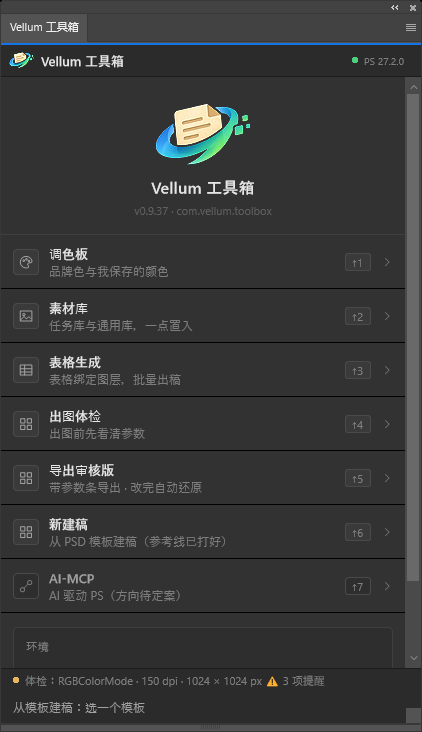
拿到新的 .ccx，直接双击覆盖安装即可，不用先卸载。装完一样要重启 PS。
如果控制面板里删不干净（残留目录），可以手动删掉插件数据目录 —— 但删它等于把你的偏好一起删了：
%APPDATA%\Adobe\UXP\PluginsStorage\PHSP\<PS大版本>\External\com.vellum.toolbox\。里面有 PluginData\palette.json（我的颜色）、table-pref.json（表格样式）等。删掉不可恢复。另外这个目录也是「Vellum工作台」往里写素材镜像的地方，删之前先在软件里关掉插件联动。新电脑：装 PS → 装插件（.ccx 或 UDT）→ 装「Vellum工作台」并指向你的工作区目录。插件自己不存素材，所以没有什么需要搬的；只有「我的颜色」想带过去的话，把老机器上的 palette.json 拷到新机器同样的路径下即可。
一页一个。每个工具都先说"它解决什么"，再逐块说明界面，最后给出边界（哪些它不做）。
目前只有 AI-MCP 还是灰的（没做）；其余七个都能用。
首页是一竖排入口。每行左边是图标与一句话说明，右边是号位（↑1 ~ ↑7）和箭头。号位是固定的，报错时说"第 5 行"大家都懂。
| 行 | 副标题 | 要什么前提 |
|---|---|---|
| ① 调色板 | 品牌色与我保存的颜色 | 无。打开就能用 |
| ② 素材库 | 任务库与通用库，一点置入 | 需要「Vellum工作台」同步过素材 |
| ③ 表格生成 | 表格绑定图层、批量出稿 | 无。有一个 CSV 就行 |
| ④ 出图体检 | 出图前先看清参数 | 无。打开一张稿就能体检（2.7） |
| ⑤ 导出审核版 | 带参数条导出 · 改完自动还原 | 无。打开一张稿就能导（2.8） |
| ⑥ 新建稿 | 从 PSD 模板建稿（参考线已打好） | 模板那半边需要工作台收录了模板（2.9） |
| ⑦ AI-MCP | 把面板能力开放给 AI 客户端 | 尚未开放 |
解决的是"每次都要手输公司色的 HEX"。上面一块是品牌色（固定的六个，由开发维护），下面一块是我的颜色（你自己存的常用色）。
| 怎么点 | 结果 |
|---|---|
| 左键 | 把颜色设成 Photoshop 的前景色 |
| Shift + 左键 | 把颜色设成 Photoshop 的背景色 |
| Alt + 左键 | 直接填充当前图层或当前选区（不改前景 / 背景色）—— 想"啪一下铺满"用这个 |
| 右键 或角上的 ✕ | 删掉这个颜色（只有「我的颜色」能删，品牌色删不掉） |
顶部那两行是当前前景 / 背景色的读数（如 #E60012）。它是个"回执"：点完色块如果这里没变，就说明没设上。鼠标停在色块上也能看到它的 HEX。
存当前色 把当前前景色收进「我的颜色」（同一个颜色不会重复存）。
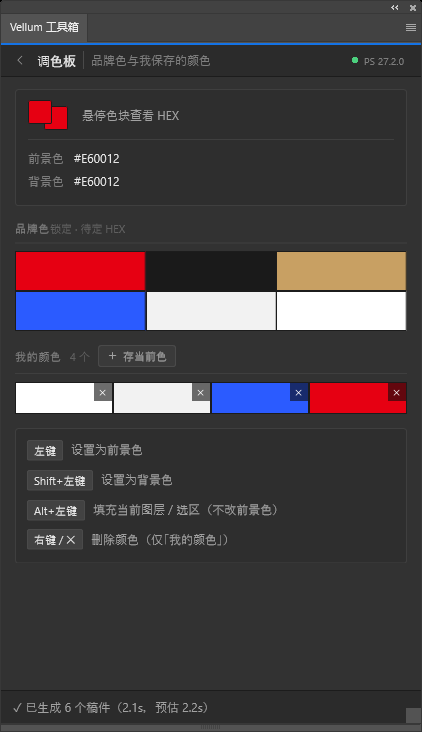
素材库不生产素材，它显示的是「Vellum工作台」同步过来的清单与缩略图。上面有两个库（页签）：
| 库 | 装什么 |
|---|---|
| 任务库 | 挂在某个任务下面的素材。按项目 → 任务分组，可以按项目筛 |
| 通用库 | 不属于任何任务的常备素材（logo、字体、模板）。顶层是 公司素材 / 个人收藏，往下还能继续分层（最多 5 层） |
通用库 › 公司素材），点任意一段直接跳回那一层 —— 不用一层层退。面板底部那条会写着现在看的是哪个库、多少张、筛的哪一层 —— 排查时先看它。
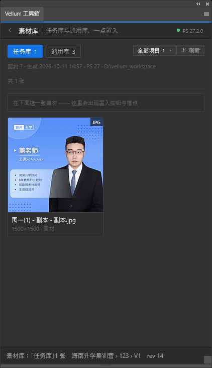
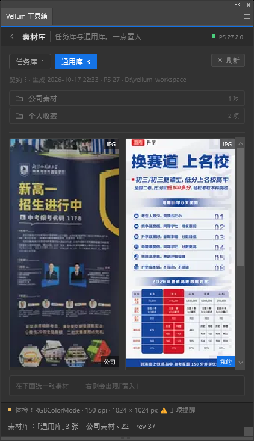
点一张缩略图选中它，面板最底下会出现一条详情，只有两行：左边是这张图是什么，右边是置入。
| 你会看到 | 含义 |
|---|---|
| 文件名（第一行） | 名字太长会自己省略；鼠标停上去能看到完整文件名、磁盘路径、标签 |
| 尺寸 · 大小 · 角色 · 来源（第二行） | 来源是「公司」还是「我的」，后面跟着它在库里的目录位置 |
| 置入 | 真的把图放进去。放的是副本，原文件不动 |
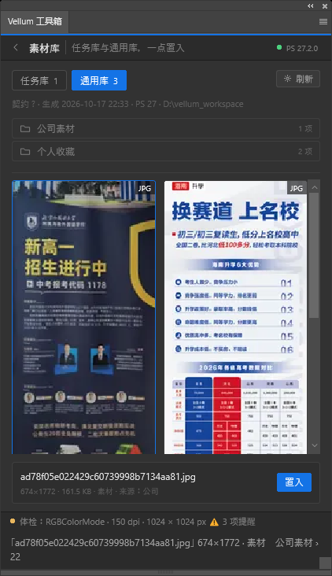
(2)、(3)。智能对象内部记录的原始文件名改不了，那不在图层面板里显示。这个工具的产物不是一张"图片"，而是一堆可以继续改的图层：边框是细矩形、文字是普通文字图层。生成完你还能改字、改色、挪位置。
.csv / .txt / .tsv 文件。第一行默认当表头。导入成功后，顶部会显示文件名与「N 行 · M 列」，下面一行写着识别到的编码。中间立刻出现表格预览。
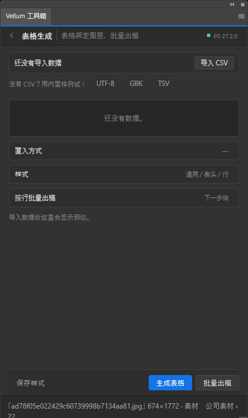
| 选项 | 说明 |
|---|---|
| 用当前选区 | 先拿选框工具在画布上框一块，表格就画在这块里（推荐：所见即所得） |
| 落点锚 | 不选区也能用：按一个预设尺寸（默认 420×320）生成表格框。画布很小时可能超出边界，面板会提示 |
「样式」折叠块里有 通用 / 表头 / 行 三个页签：边框、底色、字号、文字颜色、行高表头高、内边距、列宽（等分或逐列改）。改完点 保存样式 会记住这套参数，下次打开还在。
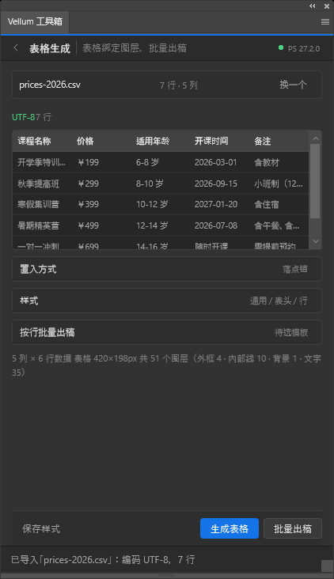
点 生成表格。生成完文档里会多出一个图层组，组名是「表格 · 文件名」，状态栏写着「✓ 已生成 …：图层 +N（预计 N），用时 X ms」。
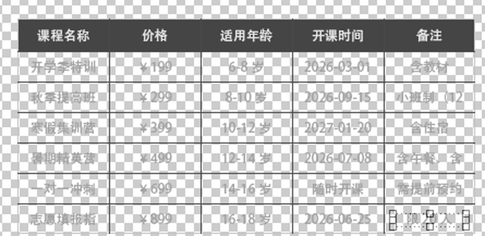
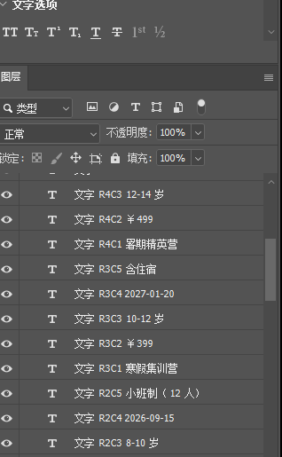
文字 R4C2），随时能改这是表格页最下面那块。它解决的是：我有一张数据表，和一个搭好的版式，要出 N 份长得一样、只有内容不同的稿。（等价于 PS 原生的"图像 → 变量 → 数据组"，但那一套在 UXP 里调不到，插件自己实现了一套。）
底部会实时算给你看：「N 份 × M 处文字（共 K 次写入）… 预估 ≈X s」。确认无误，点 生成 N 个稿件。
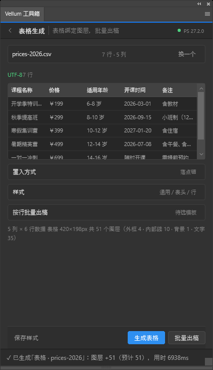
解决的是"发出去才发现是 RGB / 分辨率不够 / 字没转曲"。打开一张稿，点首页第 ④ 行，它会把这页稿的 12 项参数挨个查一遍，只读，不改图、不删层、不进历史。
| 标记 | 意思 |
|---|---|
| 合格 | 这一项没问题（颜色偏绿） |
| 提醒 | 能发，但可能会被印刷厂打回来。比如 RGB 稿、150dpi、文字没转曲 |
| 无结论 | PS 没提供足够信息，插件不下判断 —— 不会假装合格 |
色彩模式、分辨率、像素尺寸、物理尺寸、位深、颜色配置文件、文字图层是否转曲、字体是否都在本机、隐藏图层数、元素是否超出画布、出血、文档名与"有无未保存改动"。
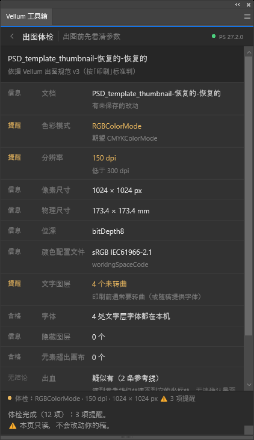
发给客户 / 领导看版时，最常被问的三件事：这是几比几的、多少 dpi、有没有出血。这个工具把答案直接印在图的底部，导出一张带参数条的审核图。
| 区块 | 说明 |
|---|---|
| 出血 | 三个按钮：无出血 / 有出血 / 不确定。不确定会照实写进参数条，不瞎猜 |
| 出血量 | 选「有出血」后才能改，默认 3mm |
| 参数条预览 | 这里显示的就是导出去的样子，配色 = 导出时的真实主题（深图用深条、浅图用浅条） |
文件名 ｜ 导出时间 ｜ 色彩模式 / 位深 / dpi / 像素尺寸 ｜ 物理尺寸 ｜ 出血判定 ｜ 颜色配置文件 ｜ 文字是否转曲 ｜ 素材来源 ｜ 右上角「审核用 · 非成品」角标。
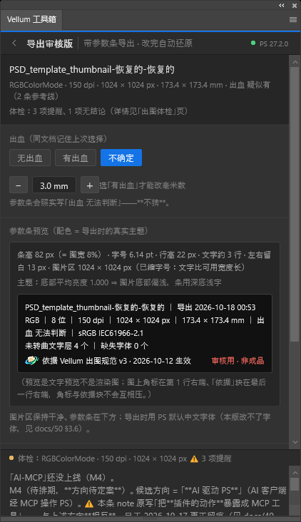
首页第 ⑥ 行。进去有两个模式，顶部两个页签切换：
| 模式 | 它干什么 | 前提 |
|---|---|---|
| 从模板建稿 | 浏览「PSD 模板」分区，选中一个直接在 PS 里打开成新稿（参考线是模板里打好的） | 「Vellum工作台」里收录过模板 |
| 按规范建稿 | 选一个常用规格，自动加 3mm 出血并在成品边打四条参考线 | 无。打开就能用 |
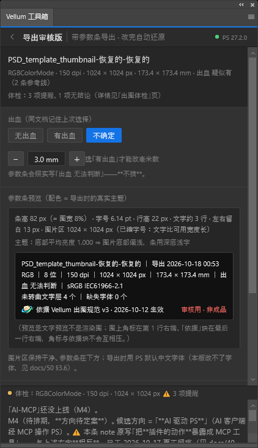
| 规格 | 成品尺寸 | dpi | 色彩模式 | 建出来的画布 |
|---|---|---|---|---|
| 易拉宝 | 800 × 1800 mm | 150 | CMYK | 806 × 1806 mm（4760 × 10665 px） |
| 展架 | 600 × 1600 mm | 150 | CMYK | 606 × 1606 mm |
| 海报 A3 | 297 × 420 mm | 300 | CMYK | 303 × 426 mm（3579 × 5031 px） |
| 海报 A4 | 210 × 297 mm | 300 | CMYK | 216 × 303 mm |
| 名片 | 90 × 54 mm | 300 | CMYK | 96 × 60 mm（1134 × 709 px） |
选中一个规格，底栏会写清画布多少像素 / 多少 dpi / 成品多少毫米，点 新建 就建出来，建完还会把实际尺寸读回来核一遍。
首页最后一行「AI-MCP · 驱动 PS（方向待定案）」现在是灰的：规划中，尚未排期。点它会提示"还没上"。
它的设想是把面板里的动作（设色、置入素材、生成表格…）暴露成 AI 客户端能直接调用的工具。在此之前，插件不会和任何外部 AI 通信。
只有素材库那一格需要工作台。这一章说清"数据是怎么过去的"—— 弄明白这个，绝大多数"插件里没有东西"的问题就自己解释通了。
不是"插件去连软件"，而是软件把清单写好，插件去读：
这个目录里躺着素材清单（manifest.json / task.json / brand.json）和缩略图。插件每 3 秒看一次它有没有变，变了就重新读一遍 —— 所以你在软件里改完东西，插件那边会自己跟上。
打开「Vellum工作台」→ 点顶栏的 插件：
| 开关 | 说明 |
|---|---|
| 启用插件联动 | 总开关。关掉之后插件里什么都看不到、也置入不了。平时保持勾上 |
| 分组上的 同步 开关 | 通用库每个分组右边有一个。父组关掉，子组跟着关；「未分组」里的素材默认不过去 —— 想让插件看到，把它归到某个分组里 |
设置项里还有一个「插件数据目录」。一般不用填：装好插件后软件会自己扫到并显示「已发现 N 个插件目录」。扫不到时才手填，或点 选择目录。
| 你做的事 | 插件多久看到 |
|---|---|
| 在软件里改素材 / 改分组 | 软件约 1.5 秒后写盘，插件最多再 3 秒发现 ⇒ 最坏 4～5 秒 |
| 还没有装插件时先开的素材库 | 插件启动后第一次读就有 |
等不及就点面板右上角的 刷新，或者软件里点一次 同步到插件。
照着"现象"查。每条都先给最可能的原因，再给下一步动作。
按顺序：① Photoshop 完全退出再打开过吗（不是最小化）；② 帮助 → 关于 Photoshop 里是不是 2024（v25）及以上；③ 是不是装到了另一个 PS 版本上（机器上多版本时容易装错）。
多半是这台机器没有 Creative Cloud 桌面版（`.ccx` 靠它里面的组件来安装）。装一次免费版 Creative Cloud，或者改用 UXP Developer Tool 加载源码（见 1.3 路二）。
三个开关问题，倒着查：① 软件里 启用插件联动 是不是勾着；② 那些素材是不是躺在「未分组」里（那里不同步）；③ 它们所在分组的 同步 开关是不是关着。都不对的话，在软件里点一次 同步到插件，看结果里的目录数是不是 0。
正常最多 4～5 秒（见 3.3）。超过 10 秒还不动，点一次软件的 同步到插件 强制刷。另外确认软件还开着 —— 关掉软件后插件就停在最后一次同步的样子。
面板左下角会写清失败原因（比如 〔请求：scope=brand · id=59〕）。先确认「Vellum工作台」正在运行且插件联动是开着的；还不行就把那行字截图发开发 —— 那是能直接定位的原始读数。
位置：现在只有两条规则 —— 有选区落在选区中心，没选区落在画布中心（落点九宫格已经删了）。注意置入会吃掉选区，所以"框哪儿放哪儿"要每次重新框。大小：PSD / PDF 这类拿不到像素尺寸的素材不校正，会保持 PS 给的大小，手动缩放一下即可（见 2.4）。
看冒号后面那句："一列都没绑上" ⇒ 去绑定表把列绑到文字层上；"还没有模板" ⇒ 先在画布上选中你的版式图层组；"模板组里没有文字层" ⇒ 出稿靠换文字，模板里必须有文字图层。
你选中的是形状图层 / 调整图层 / 图层组。填充只对像素类图层有效。面板会明确说出是哪种图层挡住的 —— 看完再决定要不要先栅格化。
格子多时（上百格）确实要十几秒，期间 PS 会短暂不接受操作，这是正常的。面板会先告诉你预估层数。如果超过一分钟没动静，看面板左下角的状态栏。
删掉插件数据目录里的 palette.json / table-pref.json，再重启 PS。⚠️ 这是不可恢复的删除，动手前看 1.6 里的红框。
| 限制 | 说明 / 影响 |
|---|---|
| 批量出稿只换文字，不换图 | 模板里的图片会被原样复制，不会按行替换 |
| 纯色填充图层改不了色 | 这是 PS 本身的限制（形状图层、背景图层不受影响）。改色时插件会如实告诉你，不会假装成功 |
| PSD / PDF 素材不校正尺寸 | 拿不到像素尺寸，会保持 PS 给的大小 |
| 面板停靠位置不跟随工作区 | 用 UDT 开发态加载时不记住位置；正式安装后由 PS 自己记住 |
| 快捷键不一定生效 | PS 对插件声明的快捷键支持不完整，请以菜单为准 |
| 表格样式导出的通道有限 | 目前只能靠文件保存（没有剪贴板）；Excel 导入暂不支持，请先转 CSV |
不用通读，放在手边随时翻。
| 按钮 | 在哪 | 做什么 |
|---|---|---|
| 导入 CSV | 表格生成 | 选一个 CSV / TXT / TSV 文件读进来 |
| UTF-8 / GBK / TSV | 表格生成（空态） | 载入插件自带的样例，用来试手 / 排查 |
| 换一个 | 表格生成（顶部） | 换一个文件重新导入 |
| 保存样式 | 表格生成（底部） | 记住当前这套表格样式，下次打开还在 |
| 生成表格 | 表格生成（底部） | 在当前文档里生成表格图层组 |
| 重新检测模板 | 按行批量出稿 | 重新读一次当前选中的图层组当模板 |
| 生成 N 个稿件 | 按行批量出稿（底部） | 复制模板 N 份并逐份换文字 |
| 置入 | 素材库底部详情条 | 把选中的素材以副本形式放进当前画布（有选区落选区中心，否则画布中心） |
| 刷新 | 素材库（右上） | 立刻重新读一次素材清单 |
| 存当前色 | 调色板 | 把当前前景色收进「我的颜色」 |
| ✕ / 右键 | 调色板色块 | 删掉这个颜色（只有「我的颜色」能删） |
软件（「Vellum工作台」）这边要用的按钮，见软件手册的「全部按钮速查表」：插件、启用插件联动、同步到插件、选择目录。
| 词 | 意思 |
|---|---|
| 面板 / 插件 | 装在 Photoshop 里的这个小窗口。「工具」是面板里的一个页面 |
| 工作台 | 「Vellum工作台」，那个管素材的桌面软件。插件是它的下游 |
| 任务库 / 通用库 | 素材的两大来源。任务库挂在任务下；通用库是不属于任何任务的常备件 |
| 镜像 / 插件数据目录 | 工作台把素材清单和缩略图写成的本机副本，插件只读这一个目录 |
| 置入 | 把素材以副本形式放进当前画布（不动原文件） |
| 面包屑 | 钻进多层目录后出现在顶部的那串「通用库 › 公司素材 › …」，点任意一段跳回那层 |
| 信息卡 | 模板库卡片上的缩略图：不是 PSD 画面，而是品类 / 成品尺寸 / 出血 / 色彩模式的示意图 |
| 出血 | 成品尺寸之外多留的一圈（常用 3mm），印完裁掉。参考线打在成品边上 |
| 模板 / 绑定 | "模板"是你的版式图层组；"绑定"是把表里某一列指到模板里的某个文字层 |
| 出稿 | 复制模板 N 份、逐份换文字、排开 —— 一次产出 N 个稿 |
| UDT | UXP Developer Tool，Adobe 官方的插件开发 / 调试工具（开发态加载用） |
| .ccx | 插件的安装包格式，双击安装 |